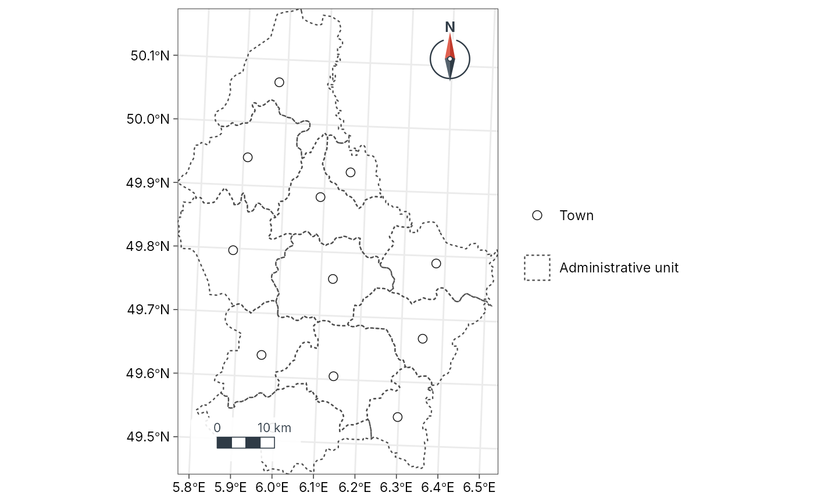

Standard cartographic symbols
map_presets.Rdmap_presets() lists the named symbols that map_polygons(),
map_lines() and map_points() accept as preset: the colours, line
widths, dash patterns and point shapes of topographic and atlas maps
(water in blue, forest in green, administrative boundaries dashed,
railways in black with long dashes, peaks as triangles), so that layers
follow common conventions without setting every argument. Colours are
readable for people with colour-vision deficiency and on white paper.
Examples
map_presets("line")
#> # A tibble: 10 × 10
#> kind preset label colour fill border linewidth linetype shape size
#> <chr> <chr> <chr> <chr> <chr> <chr> <dbl> <chr> <dbl> <dbl>
#> 1 line river River #3B83… NA NA 0.6 solid NA NA
#> 2 line stream Stream #6BAE… NA NA 0.3 solid NA NA
#> 3 line road_major Main road #C039… NA NA 0.8 solid NA NA
#> 4 line road_minor Minor ro… grey45 NA NA 0.35 solid NA NA
#> 5 line track Track grey35 NA NA 0.3 22 NA NA
#> 6 line railway Railway grey10 NA NA 0.5 42 NA NA
#> 7 line boundary Boundary grey25 NA NA 0.45 2242 NA NA
#> 8 line coastline Coastline #4A90… NA NA 0.4 solid NA NA
#> 9 line contour Contour #A078… NA NA 0.25 solid NA NA
#> 10 line transect Transect #D730… NA NA 0.6 solid NA NA
cantons <- sf::st_read(system.file("ex/lux.shp", package = "terra"), quiet = TRUE)
geo_map() |>
map_polygons(cantons, preset = "admin") |>
map_points(suppressWarnings(sf::st_point_on_surface(cantons)), preset = "town")
